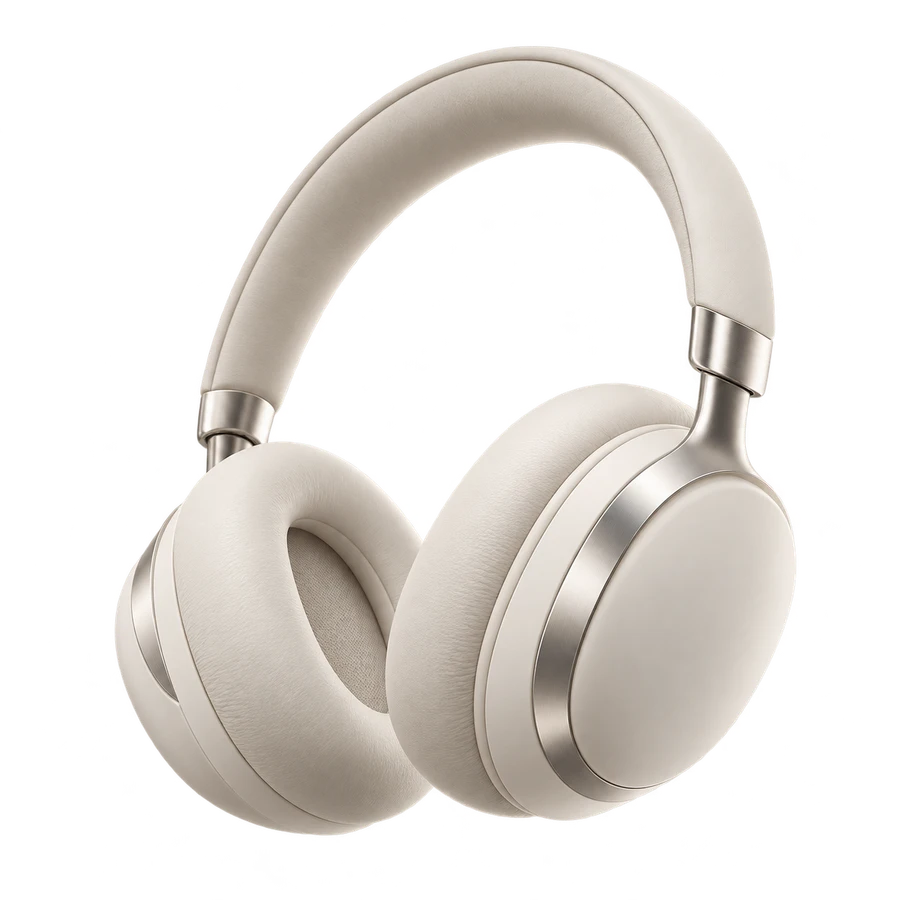

声学 × 佩戴体验
腔体材料选择
20.14%
与音质为强关系，同时关联降噪、音量和佩戴舒适度。优先选择合适的腔体材料。
以用户反馈为起点，将消费者需求转化为产品设计要求，结合竞品对标，找到质量改进方向与技术优化优先级。

续航要持久想要更安静戴着更舒服整理漫步者、倍思与绿联的评论及问答，提炼8项核心需求，再结合重要度、满意度与改进空间计算权重。
需求重要度 × 改进率 × 卖点系数
修正权重，再归一化
点击需求，查看权重如何形成。
以1—5分评价三品牌的需求满意度，结合目标值判断改进空间。
点击图中需求或下方选项，比较分项得分。
8项用户需求 × 10项技术特性。每个关系值，都是连接用户语言与设计语言的一步。
左右滑动查看整座质量屋；点击屋顶菱格、关系点或技术名称查看解读。关系矩阵支持方向键移动。
技术重要度 = Σ（需求相对权重 × 关系值）
再将技术重要度归一化，得到技术优化的相对优先级。
需求满意度描述用户体验；技术竞争评价描述技术水平。例如，漫步者降噪需求满意度为2分，降噪技术评价为3分，两者评价维度不同。
与音质为强关系，同时关联降噪、音量和佩戴舒适度。优先选择合适的腔体材料。
与续航、音量为强关系，并关联音质。提高输出功率，并控制最大输出功率。
直接响应权重最高的降噪需求，并关联音质与音量。优化底噪处理，尽量降低底噪。
技术权重表示方案设计的相对优先级。
降噪效果的相对修正权重为21.75%，位居8项需求首位。漫步者在降噪和音量上的评价均为2分，对标倍思的3分存在改进空间。
前三项技术权重合计56.90%；芯片选择以14.37%位列第四，为后续设计方案提供有次序的技术关注点。
通过8×10关系矩阵，把用户反馈、需求权重、竞品评价和技术特性连起来，形成面向满意度与竞争力提升的质量改进方案。